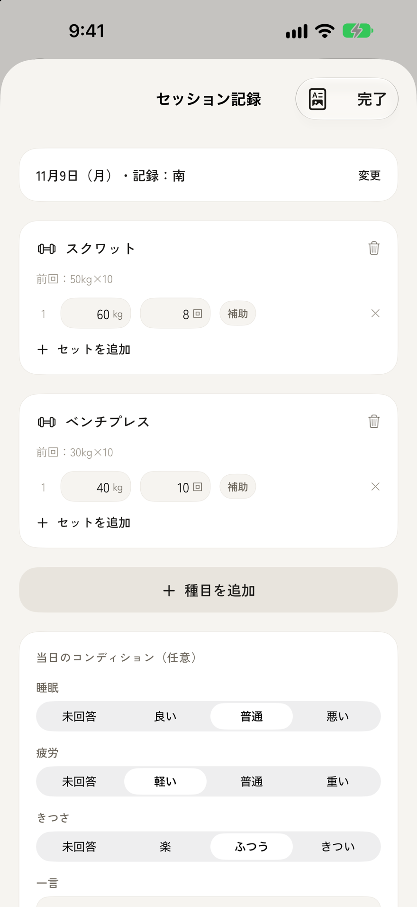
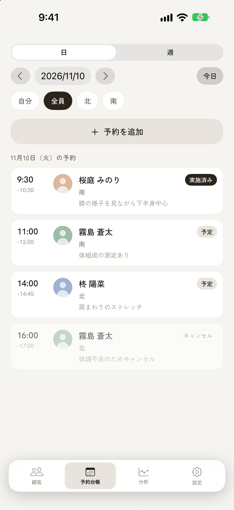
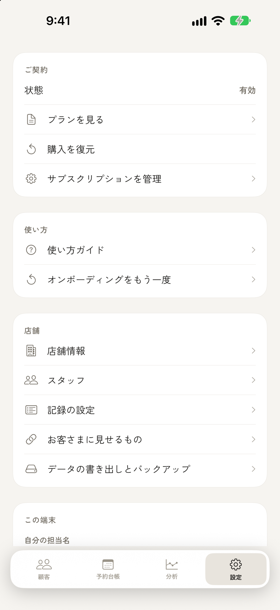
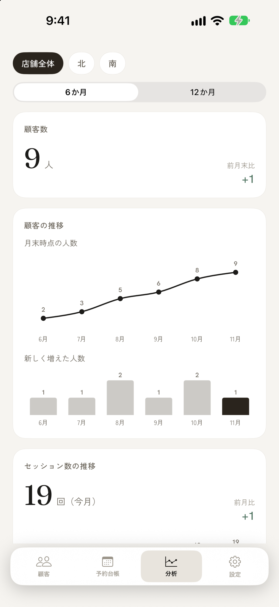

はじめる
料金のしくみ、最初に出る案内、店舗の作り方です。
料金と、用意するもの
1人で使うなら無料です。顧客が6人以上になるとき、スタッフと共有するときに、サブスクリプション（月額1,000円・年額10,000円）が要ります。オーナーもスタッフも、使う人それぞれに必要です。
| 無料でできること | ご契約が要ること |
|---|---|
| 自分で作った店舗1つ（誰とも共有していないもの）で、顧客5人まで記録 | 6人目からの顧客の追加 |
| セッション・予約・同意書・体組成・写真の記録 | スタッフの招待、店舗への参加 |
| 顧客へのレポート、CSV の書き出し、バックアップ | 2つ目の店舗、CSV の取り込み、バックアップの復元 |
用意するものは2つです。
- iPhone・iPad（iOS 18 以上）か Mac（macOS 15 以上）
- iCloud にサインインした Apple アカウント。店舗をスタッフと共有するときに使います。店舗のデータは、オーナーの iCloud 容量を使います。
最初の設定
はじめてアプリを開くと、案内の画面が順に出ます。料金の案内はここでは出ません。プランは、必要になったときに設定の「ご契約」から選べます。
- ようこそ：できることを確かめて「次へ」を押します。
- 同意：「利用規約を読む」「プライバシーポリシーを読む」で内容を確かめ、4つの項目すべてにチェックを入れて「同意して始める」を押します。
- 使い方を選ぶ：自分で店舗を開くなら「自分の店舗を作る（オーナー）」、オーナーから招待されたなら「招待されて参加する（スタッフ）」を選びます。まだ決められないときは「あとで決める」で先に進めます。
- 「準備ができました」と出たら「はじめる」を押します。
「iCloud の確認」の画面が出たとき
iCloud が使える状態なら、この画面は出ません。出たときは、iPhone の設定アプリを開き、上部の Apple アカウントでサインインして「iCloud」をオンにしてから、「もう一度確認」を押します。iCloud が使えなくても先へ進めますが、店舗の共有はできません。
案内をもう一度見たいとき
「設定」タブの「使い方」にある「オンボーディングをもう一度」で見直せます。同じ場所の「使い方ガイド」から、アプリの中でも使い方を読めます。
店舗を作る
- 最初の設定で「自分の店舗を作る」を選びます。あとからは、「顧客」タブ上部の店舗名を押して「新しい店舗を作る」でも作れます。
- 業種を選びます。業種によって、種目、記録の入力欄、カウンセリングの質問が変わります。
- 「店舗名」を入れて「店舗を作る」を押します。
| 業種 | 記録すること |
|---|---|
| 筋トレ（パーソナルジム） | 重量×回数でセットを記録します。体組成や推定1RMのグラフも見られます。 |
| ピラティス | マシン・スプリング・回数を記録します。姿勢の変化を写真で見比べられます。 |
| ヨガ | ポーズごとに呼吸数・左右・バリエーションを記録します。 |
| ストレッチ | 部位ごとに保持時間と強さ、前後の柔軟性（cm）を記録します。 |
店舗を作ると、その業種でよく使う種目と、同意書のひな形が最初から入っています。業種はあとから設定の「店舗情報」にある「業種」で変えられ、変えてもこれまでの記録や種目はそのまま残ります。
店舗を切り替える
「顧客」タブ上部の店舗名を押すと、店舗の一覧が出ます。いくつかの店舗を持っている・参加しているときは、ここで切り替えます。「予約台帳」「分析」「設定」の各タブは、ここで選んだ店舗の内容になります。
毎日の記録
顧客のカルテを作り、来店のたびにセッションを記録します。
顧客を登録する
- 「顧客」タブの「顧客を追加」を押します。
- 「氏名」を入れます。必須はこれだけで、ほかの項目はあとから入れられます。
- 右上の「追加」で保存します。
スタッフと使っている店舗では、はじめて追加するときに「自分の担当名」を聞かれます（担当名と、担当での絞り込み）。1人で使っている店舗では聞かれません。
顧客の一覧の見方
行には、名前の下に前回のセッションの日付と、次回の予定が出ます。並び順（名前・最終来店日・次回予定）は、見出し「顧客」の右で変えます。今日の予約があるときは、いちばん上に「今日の予約」が出て、名前を押すとその顧客のカルテが開きます。
カルテの見方
一覧の顧客を押すと、カルテが開きます。上から「指導方針（基本プラン）」「引き継ぎメモ」「セッション」と並び、その下に「基本情報」「予約」「カウンセリング」「KATACHI 連携」「同意書」「体組成・周径」「姿勢写真」が続きます。iPad と Mac では2列になります。
引き継ぎメモは「次の担当への申し送りを書く」に書いて「追加」を押します。書いた人と日時が残り、店舗のスタッフ全員が見られます。
顧客の編集は右上のペンのボタン、削除はカルテのいちばん下の「この顧客を削除」です。
まず試したいときは、見本の顧客
顧客がまだ1人もいない店舗（自分の店舗で、誰とも共有していないもの）では、顧客の画面に「見本の顧客を入れてみる」が出ます。押すと、架空の顧客が1人、過去のセッション3回ぶんと一緒に入ります。前回の値が出るようす、グラフ、顧客へのレポートを、自分の顧客を入れる前に試せます。
見本の顧客は、無料の5人には数えません。いらなくなったら、一覧の上の「見本を消す」で消せます。
カルテに入れられる項目
| 基本情報 | 顔写真、氏名、ふりがな、担当トレーナー、性別、生年月日、電話、メール |
|---|---|
| 目的・指導方針 | 目的（業種ごとの候補から選べます）、指導方針（基本プラン） |
| カウンセリング | 数値目標、気になる部位（人体図）、普段の運動、運動歴、食生活の概要。ピラティス・ヨガ・ストレッチの店舗では、業種ごとの質問も加わります。 |
| 次回予定（メモ） | 次回予定日と次回担当のメモです。予約台帳に予定の予約があるときは、カルテと一覧にはそちらが「次回」として出ます。 |
| 配慮事項・メモ | 自由に書けます。配慮事項には、体調面で気をつけることだけを書き、病名・既往歴・服薬は書かないでください。 |
「気になる部位」は、正面と背面の人体図で部位を押して選びます。もう一度押すと外れます。
セッションを記録する
- 顧客のカルテを開き、「セッション」の「記録を追加」を押します。前に記録があれば、「前回と同じメニューで始める」で、前回の種目が並んだ状態から始められます。
- 「種目を追加」を押し、行う種目にチェックを付けて、右上の「追加」を押します。いくつでもまとめて選べ、上の欄で検索もできます。前に同じ種目を記録していれば、「前回：60kg×10 ・ 60kg×8」のように前回の内容が出ます。
- 「セットを追加」でセットを足します。直前のセットと同じ値が入った状態で増えるので、同じ重量・回数なら数字を直す必要はありません。
- 終わったら「完了」を押します。入力するたびに自動で保存されるので、保存ボタンはありません。
記録を閉じると、カルテに「記録しました」と出て、そこから「レポートを送る」「次回の予約を入れる」に進めます。
記録の日付は、記録を始めた日になります。過去の分を入れるときは、記録画面のいちばん上の行の「変更」を押して、日付を変えてください。記録した人も同じ場所で変えられます。
予約台帳を使っているなら、予約から直接記録を始めることもできます（予約台帳を使う）。

毎回同じメニューなら「メニューの型」
設定の「記録の設定」（Mac は店舗設定の「記録・担当の設定」）にある「メニューの型」で、「追加」から型を作れます。型の名前を付け、種目を行う順に押して選びます。型を作っておくと、カルテの「セッション」に「型から始める」が出て、種目が並んだ状態で記録を始められます。型に入るのは種目の並びだけで、重量や回数はその日に入れます。
種目の追加・並べ替え・非表示は、同じ場所の「種目ライブラリ」で行えます。
業種ごとの入力欄
| 筋トレ | 重量（kg）・回数・補助。有酸素の種目は km/h・分・% を入れます。 |
|---|---|
| ピラティス | 回数、スプリング（メーカーと色）、左右、調整 |
| ヨガ | 呼吸数（または秒）、左右、バリエーション・プロップス |
| ストレッチ | 保持（秒）、方法（静的・動的・PNF・パートナー）、左右、強さ（0〜10） |
ピラティス・ヨガ・ストレッチでは、種目を追加すると1行目が入り、「記録を追加」で行を足します。
当日のコンディション
記録画面の下の「当日のコンディション（任意）」で、睡眠・疲労などの調子と、ひとことを残せます。入れた項目は、顧客へのレポートにも載ります。病名やけがの内容は書かないでください。
顧客へのレポートを送る
その日の記録を PDF にして、顧客に送れます。ご契約がなくても作れます。
- 記録を閉じたあとにカルテに出る「レポートを送る」か、セッション記録の右上の「レポート」を押します。カルテのセッションを長押しして「顧客へのレポートを作成」を選んでも開けます。
- 必要なら「トレーナーからのコメント（任意）」を書きます。下に、できあがりの PDF が表示されます。
- 「共有」から、LINE・メール・AirDrop などで顧客に送ります（Mac は「印刷」「書き出す」）。
レポートには、その日の記録、当日のコンディション、最近の推移が入ります。コメントは書いた端末に残り、同じ記録のレポートを開き直すと元のまま出ます。
予約台帳を使う
LINE や電話、外部の予約サービスで受けた予約を、店舗のみんなで記録する台帳です。顧客が自分で予約する機能や、顧客への通知はありません。
- 「予約台帳」タブで「予約を追加」を押します。
- 「顧客を選ぶ」で顧客を選び、開始の日時と所要時間（30分〜120分、または「その他」）を選びます。担当には、顧客の担当トレーナーが自動で入ります。
- 必要ならメモ（例：LINE で受付・初回体験）を入れて、「追加」を押します。
上部で「日」「週」の表示を切り替え、担当の並びで「全員」や担当者ごとに絞り込めます。同じ担当の予約と時間が重なると知らせますが、そのまま保存することもできます。
予約からセッションを記録する
予約を押して開き、「セッションを記録」を押すと、予約の日時でセッションが作られ、予約が「実施済み」になって記録画面が開きます。予約を長押しして選ぶこともできます。
予約の状態は「予定」「実施済み」「キャンセル」「無断キャンセル」から選べ、分析の実施率に使われます。

予約ページのリンクを顧客に送る
Google カレンダーの予約ページ・STORES 予約・RESERVA などを使っているときは、設定の店舗情報にある「予約ページのリンク（任意）」に登録しておくと、予約台帳の上部に送るボタンが出て、顧客にリンクを送れます。
体の変化を残す・見る
体組成・周径
カルテの「体組成・周径」で「測定を追加」を押し、体重・体脂肪率、周径（胸・ウエスト・ヒップ・太もも・二の腕）を入れます。セッションの前と後に柔軟性（cm）を測って残すこともできます。入力欄の横には、前回の値が出ます。
ヨガ・ストレッチの店舗では、最初は体組成・周径が表示されず、「柔軟性チェック」になっています。使いたいときは、設定の「店舗情報」にある「業種」で「体組成・周径を表示する」をオンにします。
姿勢写真
カルテの「姿勢写真」で「写真を追加」を押し、向き（正面・側面・背面）を選んで、撮影するかライブラリから選びます。写真が2枚以上になると「比較」が出て、同じ向きの写真を前と後で並べ、格子線を重ねて見比べられます。
グラフ
カルテ右上のグラフのボタン（Mac はカルテの中の「グラフ」）で、推移を見られます。体重・体脂肪率のほか、筋トレは種目別の推定1RMとボリューム、ピラティスは回数、ヨガ・ストレッチは保持の推移、柔軟性の記録があればその推移も出ます。推定値は目安です。
同意書に署名してもらう
- カルテの「同意書」で「同意書に署名」を押します。
- 同意書の内容を顧客に確かめてもらい、署名欄に指か Apple Pencil で署名してもらいます。「1画戻す」「書き直す」でやり直せます。
- 「確定」を押すと PDF になり、カルテに保存されます。
保存した同意書は押すと開き、「共有」から送ったり保存したりできます（Mac は「印刷」「書き出す」）。署名は iPhone か iPad で行ってください。
同意書の文面を店舗に合わせる
設定の「記録の設定」（Mac は店舗設定の「同意書」）にある「同意書テンプレート」で直せます。最初に入っているのはひな形なので、使う前に一度目を通してください。本文の {店舗名} と {店舗の連絡先} は、署名のときに自動で差し込まれます。連絡先は、設定の店舗情報で入れておきます。
スタッフと使う
オーナーがスタッフを招待すると、同じ店舗の顧客・セッション・予約を全員で見て記録できます。
スタッフを招待する（オーナー）
- 「設定」タブの「スタッフ」を開きます（Mac は左の「店舗設定」にある「スタッフを招待」）。
- 「メールアドレス」に、スタッフの Apple アカウントのメールアドレスを入れて「招待する」を押します。
- 「招待しました」と出たら、「招待を送る（LINE・メールなど）」で招待のリンクをスタッフに送ります。「リンクをコピー」でコピーして、自分で貼り付けて送ることもできます。
- スタッフが参加すると、「メンバー」の一覧で「参加済み」と表示されます。

| だれでもできる | 顧客・セッション・予約を見る、記録する。顧客へのレポートと同意書の PDF を作る。 |
|---|---|
| オーナーだけ | スタッフの招待と外す操作、CSV の書き出しと取り込み、バックアップ、KATACHI 連携を始める・解除する。 |
招待されて参加する（スタッフ）
- App Store で KATACHI + を入れ、最初の設定を進めます。使い方は「招待されて参加する」を選びます。
- iPhone・iPad：オーナーから届いたリンクを押すと、そのまま参加できます。
- 「（店舗名）に参加しました」と出れば完了です。参加した店舗が開きます。続けて「この店舗での名前」を聞かれるので、自分の名前を入れます（あとから変えられます）。
参加するには、スタッフ自身のご契約が必要です。ご契約の前にリンクを開いたときはプランの画面が出て、購入が済むと自動で参加します。
リンクを開いてもアプリが開かないとき（Mac など）
リンクをコピーしてから、アプリの「招待されて参加する」で貼り付けボタンを押します。「リンクを入力する」から手で入れることもできます。
担当名と、担当での絞り込み
スタッフが何人かいる店舗で、「自分の担当の顧客だけ」を見るためのしくみです。1人で使っている店舗（共有していない・担当トレーナーを登録していない・顧客に担当を入れていない）では、担当の並びは表示されません。
| 自分の担当名 | この端末を使っている人の名前です。設定の「この端末」で入れます（Mac は ⌘, の「設定」ウインドウ）。顧客一覧の「自分」の絞り込み、記録した人、予約の担当に使われます。 |
|---|---|
| 担当トレーナー | 店舗の担当者の名簿です。設定の「記録の設定」（Mac は店舗設定の「記録・担当の設定」）にある「担当トレーナー」か、顧客一覧の担当の並びの右端にある「＋」で、追加・名前の変更・削除ができます。 |
| 担当の並び | 顧客一覧と予約台帳の上にある「自分」「全員」と担当者の名前です。押すと、その人が担当の顧客・予約だけになります。見え方を絞るだけで、スタッフはどの顧客も開けます。 |
顧客の担当は、カルテの編集で「担当トレーナー」から選びます。新しく追加する顧客には、自分の担当名が最初から入ります。
スタッフを外す・店舗から抜ける
- オーナー：設定の「スタッフ」にある「メンバー」で、外す人の「外す」を押します。押す前に相手を確かめてください。外れたスタッフの端末からは、次にアプリを開いたときに店舗の記録が消えます。すでに書き出した PDF などは残ります。
- スタッフ：設定の「スタッフ」にある「この店舗から抜ける」を押します。この端末から店舗のデータが消えます。オーナー側のデータは消えません。
お客さまの KATACHI とつなぐ
お客さまが個人用アプリの KATACHI を使っていれば、カルテとつないで、記録を見せ合えます。
KATACHI 連携でできること
| 店舗に届くもの | お客さまが KATACHI でつけた自主練の記録（筋トレの種目・重量・回数、有酸素の時間・速度・傾斜）。送る項目は、お客さまが自分で選びます。 |
|---|---|
| お客さまに見せるもの | 店舗で記録したセッションと、メニュー（型）。店舗の設定で、それぞれ見せるかどうかを選べます。 |
| どちらにも届かないもの | 体重・体脂肪などの体組成、体調、メモ、写真。どの設定にしても届きません。 |
お客さま側の KATACHI は、連携を無料で使えます。店舗側は、無料の範囲（1人で使う・顧客5人まで）でも連携できます。
連携を始める（オーナー）
- 顧客のカルテの「KATACHI 連携」で、「お客さまの KATACHI とつなぐ」を押して開きます。
- 「お客さまのメール」に、お客さまが iPhone の iCloud で使っている Apple アカウントのメールアドレスを入れて、「お客さまの KATACHI とつなぐ」を押します。状態が「招待中」になります。
- 「招待を送る（LINE・メールなど）」で、招待の文面とリンクをお客さまに送ります。
- お客さまの操作：KATACHI を開き、設定の「トレーナーとの連携」で「リンクを貼り付けて参加」を押して、届いたリンクを貼り付けます。内容を確かめて「同意して参加」を押すと、つながります。
- カルテの状態が「連携中」になれば完了です。
連携中の見え方と設定
- 届いた自主練を見る：カルテの「自主練（お客さまの記録）」に、日付ごとに並びます。店舗のスタッフ全員が見られます。店舗のセッションとは別に表示され、分析のセッション数や実施率には入りません。
- お客さまに見せるものを選ぶ：設定の「お客さまに見せるもの」で、「セッションの記録」と「メニュー（型）」をそれぞれオン・オフできます。オフにすると、お客さまの KATACHI からその内容が消えます。
- お客さま側の見え方：店舗のセッションは、KATACHI のホームの「トレーナーとのセッション」に出ます。お客さまは、送る項目といつからの記録を送るかを、設定の「トレーナーとの連携」でいつでも変えられます。
- 「停止中」と出たとき：ご契約がなく、無料の範囲を超えているあいだは、お客さまとのやり取りが止まります。契約すると自動で再開します。
連携を解除する（オーナー）
カルテの「KATACHI 連携」で「連携を解除」を押します。お客さまの KATACHI には「トレーナー側で連携が終わりました」と表示され、店舗とのやり取りが止まります。カルテに届いていた自主練の表示は消えます。
お客さま自身の KATACHI の記録は消えません。それまでに共有したセッションの記録は、お客さまが自分の記録として残せます。お客さまの側から連携をやめることもできます。
連携中の顧客をカルテごと削除するときは、先に連携を解除します。
店舗を管理する
数字の確認、データの持ち出しと控え、端末ごとの設定、ご契約です。
分析を見る
「分析」タブで、顧客数、セッション数、予約数と実施率・キャンセルを、月ごとに見られます。
- 上部で「店舗全体」と担当者を切り替えます。
- 期間は「6か月」「12か月」から選べます。
- 店舗全体のときは、「担当者ごと」の表も出ます。行を押すと、その担当者の分析に切り替わります。
- 「しばらく来ていない顧客」に、最後のセッションから30日以上たっている顧客が、空いている日数の長い順に出ます。
実施率は、実施済み ÷（実施済み＋無断キャンセル）で計算しています。

書き出しとバックアップ（オーナー）
どれも設定の「データの書き出しとバックアップ」から行います（Mac は店舗設定の「データの書き出し」と、その下のバックアップの欄）。
| CSV で書き出す | 「顧客を CSV で書き出す」「セッションを CSV で書き出す」。Excel で開けます。 |
|---|---|
| CSV から取り込む | 「取り込み用のひな形（CSV）」に記入して、「顧客を CSV から取り込む」を押します。紙やほかのアプリからの乗り換えに使います。 |
| 自動バックアップ | 自分がオーナーの店舗は、この端末に1日1回まで自動で控えを残します（新しい7つまで）。iCloud の同期とは別の控えです。 |
| ファイルに書き出す | 「バックアップを書き出す」で、好きな場所に保存できます。自動バックアップは端末の中にあるので、別の場所にも残しておくと安心です。 |
| 復元 | 「バックアップから復元」でファイルを選ぶか、自動バックアップの一覧の「復元」を押します。「店舗名（復元 日付）」という新しい店舗として作られ、いまの店舗には手を加えません。 |
| 書き出し履歴 | CSV・PDF・バックアップを書き出した記録です。スタッフの書き出しも残ります。 |
CSV の取り込みで知っておくこと
- 取り込む前に、件数と先頭の5行を確かめられます。
- 追加のみで、いまいる顧客は上書きしません。氏名と電話が同じ人は、重複として飛ばします。
- UTF-8 と Shift_JIS の CSV を読めます。
- ひな形の1行目は見本なので、消してから使ってください。
アプリロックと端末ごとの設定
アプリロックは最初からオンです。アプリを開くときと、アプリから離れて設定した時間（すぐに・1分・5分・15分）が過ぎたあとに、Face ID・Touch ID・パスコードで確かめます。設定の「この端末」で変えられます。
同じ「この端末」で、自分の担当名と表示（システム・ライト・ダーク）も変えられます。Mac では、これらは「設定」ウインドウ（⌘,）にあります。
ご契約について
- 設定の「ご契約」で、状態の確認、「プランを見る」「購入を復元」「サブスクリプションを管理」ができます。機種を変えたときは「購入を復元」を押してください。
- 解約は「サブスクリプションを管理」か、App Store のアカウント設定から行います。期間が終わる24時間以上前に解約しない限り、自動で更新されます。
- ご契約が終わっても、閲覧と書き出し（CSV、顧客へのレポート、同意書の PDF、バックアップ）は続けて使えます。スタッフと共有している店舗や顧客が6人以上いる店舗では、記録や編集、予約の追加、スタッフの招待などが止まります（無料の範囲の店舗は、そのまま記録できます）。
Mac で使うとき
左の列に「顧客」「予約台帳」「分析」「店舗設定」が並びます。ご契約や「この端末」の設定は、「設定」ウインドウ（⌘,）にあります。
| ⌘N | 顧客を追加 |
|---|---|
| ⇧⌘N | セッションを始める |
| ⌘E | 顧客を編集 |
| ⌘F | 検索 |
| ⌘1〜⌘4 | 左の列の切り替え |
セッション記録では、Return か Tab で 重量 → 回数 → 次のセット と進み、最後の回数で Return を押すと新しいセットが足されます。写真は Finder からドロップして入れられます。同意書の署名は、iPhone か iPad で行ってください。
困ったとき
場所が分からないときの早見表と、よくあるつまずきです。早見表は iPhone・iPad の場合です。Mac では、設定の中身が左の「店舗設定」に1枚で並びます。
あの機能はどこ？
| 店舗を切り替える・増やす | 「顧客」タブ上部の店舗名 |
|---|---|
| スタッフを招待する | 設定 → 「スタッフ」（オーナーのみ） |
| 自分の担当名を変える | 設定 → 「この端末」 |
| 担当トレーナーを足す | 設定 → 「記録の設定」 → 「担当トレーナー」 |
| 種目を足す・並べ替える | 設定 → 「記録の設定」 → 「種目ライブラリ」 |
| メニューの型を作る | 設定 → 「記録の設定」 → 「メニューの型」 |
| 同意書の文面を直す | 設定 → 「記録の設定」 → 「同意書テンプレート」 |
| 業種を変える | 設定 → 「店舗情報」 → 「業種」 |
| 顧客の並び順を変える | 顧客一覧の見出し「顧客」の右 |
| 顧客を削除する | カルテのいちばん下の「この顧客を削除」 |
| 記録の日付を変える | セッション記録のいちばん上の行の「変更」 |
| 顧客へのレポートを作る | セッション記録の右上の「レポート」 |
| グラフを見る | カルテ右上のグラフのボタン |
| KATACHI とつなぐ | カルテの「KATACHI 連携」（オーナーのみ） |
| CSV・バックアップ | 設定 → 「データの書き出しとバックアップ」（オーナーのみ） |
| 契約の確認・購入の復元 | 設定 → 「ご契約」 |
| アプリの中の使い方 | 設定 → 「使い方」 → 「使い方ガイド」 |
うまくいかないとき
登録した顧客が一覧に出てきません
顧客一覧の上の担当の並びが「自分」になっていると、自分が担当の顧客だけが表示されます。「全員」を選ぶか、顧客の「担当トレーナー」に自分の名前を設定してください。
「このリンクに招待されていません」と出ます
オーナーが招待に使ったメールアドレスが、あなたの Apple アカウントのものと違う可能性があります。iPhone の設定アプリ上部の Apple アカウントでメールアドレスを確かめ、そのアドレスでオーナーに招待し直してもらってください。
招待のリンクを開いてもアプリが開きません
Mac などでは、リンクを開いてもアプリが開かないことがあります。リンクをコピーしてから、アプリの「招待されて参加する」で貼り付けボタンを押してください。
お客さまが KATACHI 連携に参加できません
招待のリンクは、押して開くのではなく、お客さまの KATACHI の設定にある「トレーナーとの連携」で「リンクを貼り付けて参加」から貼り付けます。それでも参加できないときは、招待に使ったメールアドレスが、お客さまの iPhone の Apple アカウントのものかを確かめてください。
ほかの端末に変更がすぐ反映されません
数十秒待つか、アプリを開き直してください。両方の端末で iCloud にサインインしているかも確かめてください。
2台目の端末に店舗が出てきません
1台目と同じ Apple アカウントで iCloud にサインインしているかを確かめ、少し待ってからアプリを開き直してください。店舗がないと思って新しく作ると、店舗が二つになってしまいます。
購入したのに店舗を作れません
購入が終わると、プランの画面は自動で閉じます。もう一度「店舗を作る」（または「招待されて参加する」）を押してください。それでも未契約と表示されるときは、設定の「ご契約」で「購入を復元」を押してください。
iCloud にサインインしていないと出ます
設定アプリを開き、上部の Apple アカウントでサインインして、「iCloud」をオンにしてください。iCloud が使えないと、店舗の共有はできません。
解決しないときは、サポート か pohoda.inc@gmail.com までお知らせください。
料金やプライバシーについては KATACHI + の紹介ページ をご覧ください。